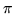

<!DOCTYPE HTML PUBLIC "-//W3C//DTD HTML 3.2 Final//EN">
<!-- Converted with jLaTeX2HTML 98.1p1 release (March 2nd, 1998) + JP patch 2.0 (March 16th, 1998)
patched by Kenshi Muto (mutou@three-a.co.jp), Three-A Systems,Co.,Ltd.
LaTeX2HTML 98.1p1 release (March 2nd, 1998)
originally by Nikos Drakos (nikos@cbl.leeds.ac.uk), CBLU, University of Leeds
* revised and updated by:  Marcus Hennecke, Ross Moore, Herb Swan
* with significant contributions from:
  Jens Lippmann, Marek Rouchal, Martin Wilck and others  -->
<HTML>
<HEAD>
<TITLE>whos</TITLE>
<META NAME="description" CONTENT="whos">
<META NAME="keywords" CONTENT="REFS">
<META NAME="resource-type" CONTENT="document">
<META NAME="distribution" CONTENT="global">
<META HTTP-EQUIV="Content-Type" CONTENT="text/html; charset=iso-2022-jp">
<LINK REL="STYLESHEET" HREF="REFS.css">
<LINK REL="next" HREF="node247.htm">
<LINK REL="previous" HREF="node245.htm">
<LINK REL="up" HREF="node4.htm">
<LINK REL="next" HREF="node247.htm">
</HEAD>
<BODY BGCOLOR=NavajoWhite>
<!-- Navigation Panel -->
<A NAME="tex2html3475"
 HREF="node247.htm">
</A> 
<A NAME="tex2html3472"
 HREF="node4.htm">
</A> 
<A NAME="tex2html3466"
 HREF="node245.htm">
</A> 
<A NAME="tex2html3474"
 HREF="node1.htm">
</A>  
<BR>
<STRONG> Next:</STRONG> <A NAME="tex2html3476"
 HREF="node247.htm">zeros</A>
<STRONG> Up:</STRONG> <A NAME="tex2html3473"
 HREF="node4.htm">$B%j%U%!%l%s%9%^%K%e%"%k(J</A>
<STRONG> Previous:</STRONG> <A NAME="tex2html3467"
 HREF="node245.htm">who</A>
<BR>
<BR>
<!-- End of Navigation Panel -->

<H2><A NAME="SECTION0004242000000000000000">&#160;</A><A NAME="man_whos">&#160;</A>
<BR>
whos
</H2><FONT SIZE="-1"><FONT SIZE="-1"><FONT SIZE="-1"><FONT SIZE="-1"><FONT SIZE="-1"><FONT SIZE="-1"></FONT></FONT></FONT></FONT></FONT></FONT><DL COMPACT>

<DT>$B!ZL\E*![(J
<DD>whos - $BEPO?$5$l$F$$$kJQ?t$K4X$9$k>pJs(J
<DT>$B!Z7A<0![(J
<DD><PRE>
whos
  
whos var
</PRE><FONT SIZE="-1"><DT>$B!Z>\:Y![(J
<DD>$B%3%^%s%I(J whos $B$rF~NO$9$k$H!$%$%s%?%W%j%?$KEPO?$5$l$F$$$kA4$F$NJQ?t(J
$B$K4X$9$k>\$7$$>pJs$,I=<($5$l$k!#$3$N$H$-!$(Jans ($B:G8e$N7W;;7k2L$r(J
$BJ]B8$9$kJQ?t(J)$B$d(J EPS ($B5!<o@:EY(J(</FONT><FONT SIZE="-1">machine epsilon)$B!$(JPI(</FONT><FONT SIZE="-1">)$B!$(J</FONT><FONT SIZE="-1">UNIX
$B$N>l9g$O(J, PID ($B%W%m%;%9(JID)$B$J$I$NDj?t$bI=<($5$l$k!#(Jwhos $B$N8e$m$K(J
$BJQ?tL>$rIU$1$k$H!$$=$NJQ?t$K4X$9$k>pJs$N$_$,I=<($5$l$k!#(J
whos $B$O!$%$%s%?%W%j%?$G$7$+MxMQ$G$-$J$$!#(J
<DT>$B!ZNcBj![(J
<DD></FONT><PRE>
whos
</PRE><FONT SIZE="-1"><FONT SIZE="-1"><DT>$B!Z;2>H![(J
<DD></FONT></FONT>
<DIV><TT>who(<A HREF="node245.htm#man_who">2.246</A>), which(<A HREF="node243.htm#man_which">2.244</A>), what(<A HREF="node242.htm#man_what">2.243</A>), exist(<A HREF="node60.htm#man_exist">2.59</A>)
<BR></TT></DIV><FONT SIZE="-1"><FONT SIZE="-1"><FONT SIZE="-1"></DL><FONT SIZE="-1"><FONT SIZE="-1"><FONT SIZE="-1"></FONT></FONT></FONT></FONT></FONT></FONT>
<BR><HR>
<ADDRESS>
Masanobu KOGA
$BJ?@.(J11$BG/(J10$B7n(J2$BF|(J
</ADDRESS>
</BODY>
</HTML>
